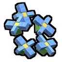

Flax Fabric
Flax Fabric is a common material. Coarse cloth woven from flax. Used for starter mage clothes and bowstrings.
Item sources
| Source | Quantity | Rarity | Notes |
|---|---|---|---|
| Possessed Sarcophagus | 3–6 | 1/2 | |
| Bandit King | 1–2 | 1/5 | |
| Mummy | 1–2 | 1/6 | |
| Bernie | 1–2 | 15% | |
| Bandit | 1 | 1/20 | |
| Zombie | 1 | 1/25 | |
| Slime | 1 | 1/33 | |
| Tier 1 Endless chest | 6–12 | 8% of its rows | Chest |
| Bandit Town chests | 4–8 | 35% of its extra row | Endless Dungeon |
Made by
Level 1; makes 1:

Flax ×25
Quest rewards
Uses
| Makes | Takes | Level | Notes |
|---|---|---|---|
 Oak Bow Oak Bow | 1 | 1 | |
 Wizard Hat Wizard Hat | 2 | 1 | |
 Wizard Robe Wizard Robe | 4 | 1 | |
 Trout Pie Trout Pie | 2 | 25 | Cookhouse |
 Provisions Pouch ×2 Provisions Pouch ×2 | 2 | 15 | |
| 4 | 25 | Cartographer's Table |
Repair Station
The Repair Station mends these with it:
 Bernie's Hat
Bernie's HatNotes
Not written yet
When Flax Fabric is worth getting, and what to do with it.
Gallery
Not written yet
No pictures yet: renders, models and animations go here.
Trivia
Not written yet
Anything else worth knowing.
Changes
Not written yet
What changed for Flax Fabric, update by update.